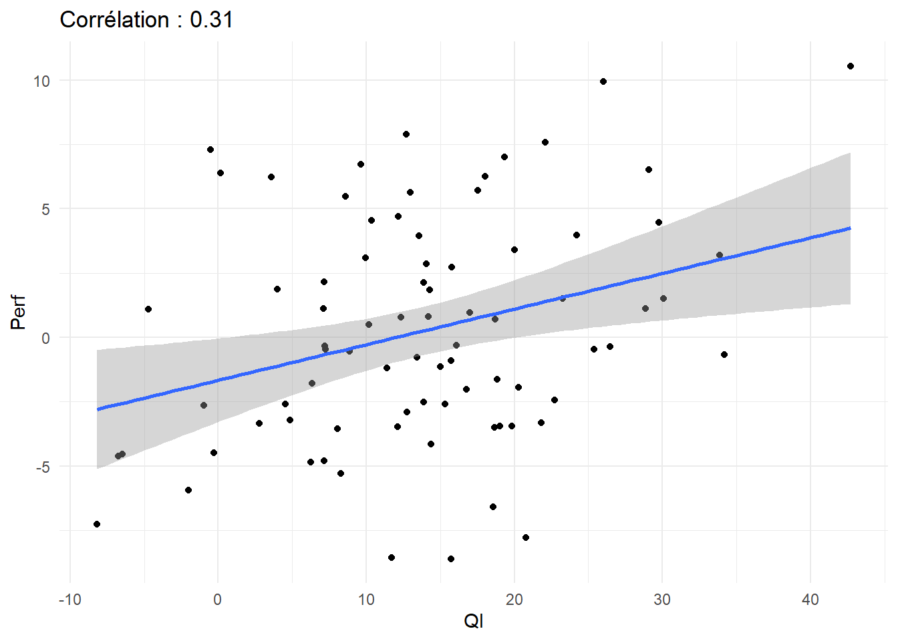
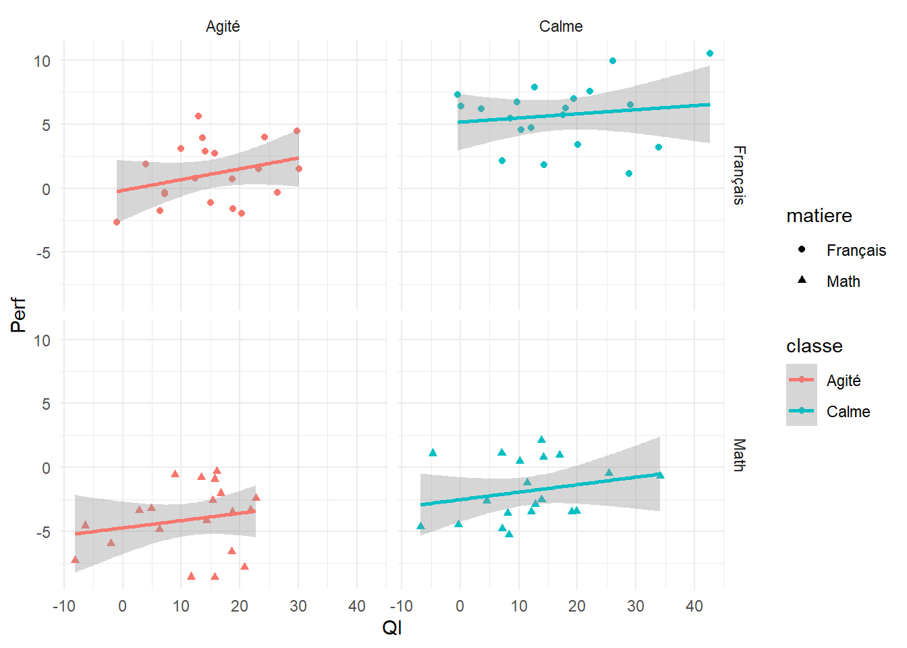
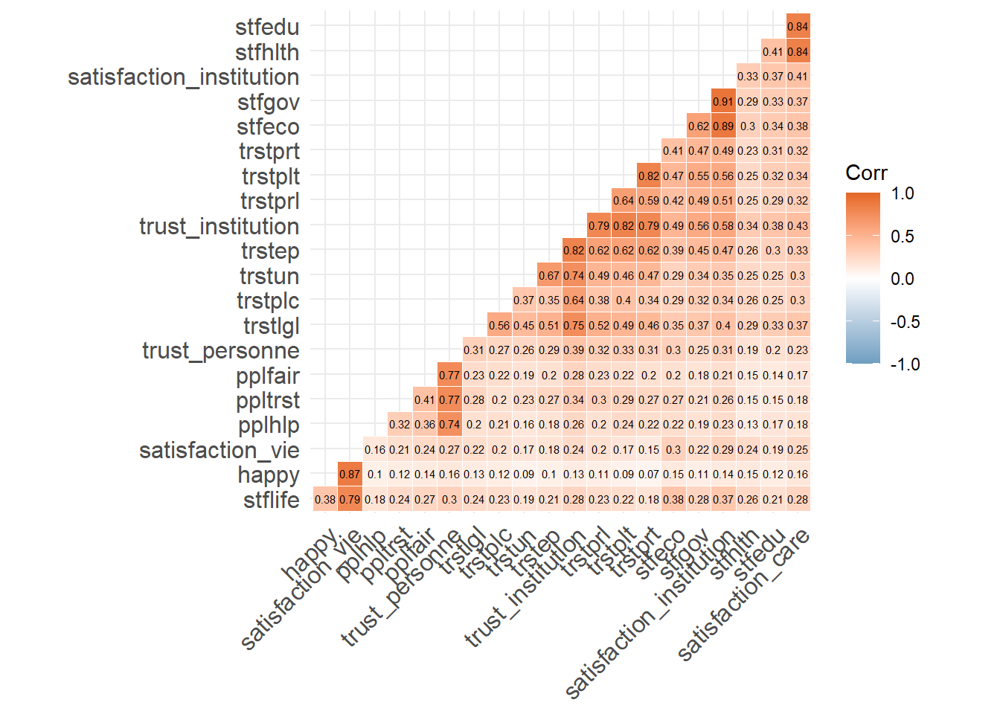
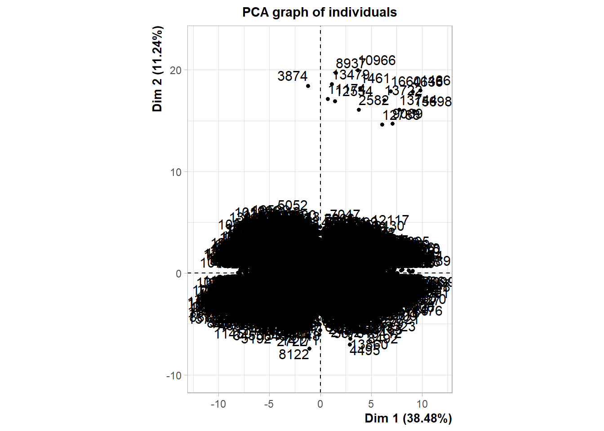
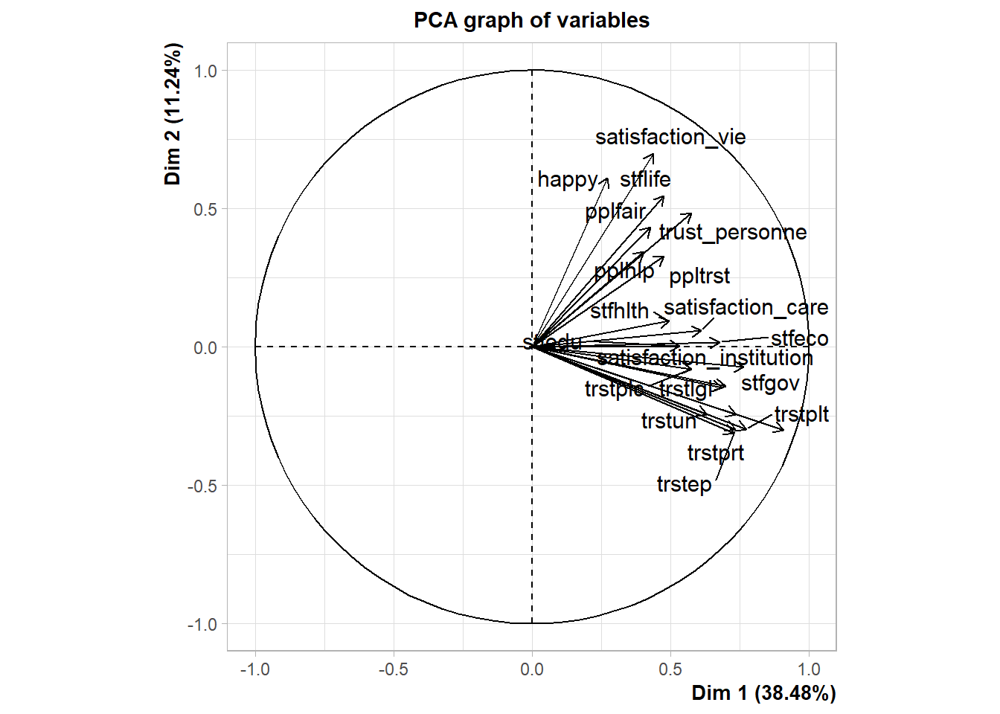
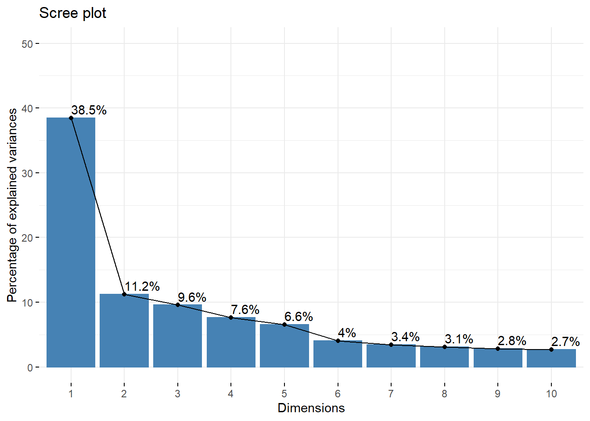
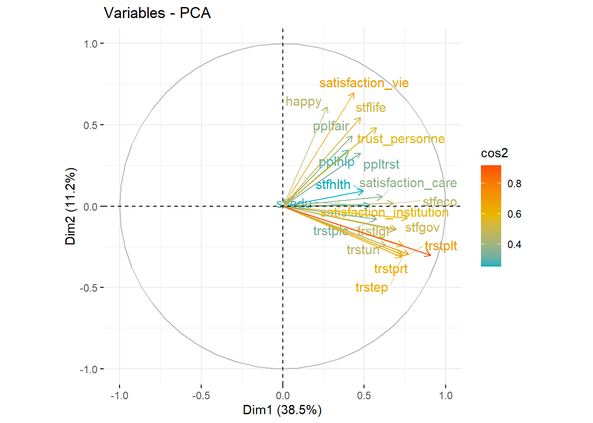

Chapitre 12 Les modèles linéaires hiérarchiques (HLM)
Les modèles de panels en économies, ou multi-niveaux en sociologie, sont caractérisés par le fait que les données sont un empilement de différents échantillons correspondant à une stratification.
12.1 en guise d’introduction
L’exemple de la performance scolaire va nous éclairer. Supposons que l’on veuille établir l’effet d’une mesure d’aptitude intellectuelle (par le exemple le score de QI) sur les notes obtenues. On va mesurer cette relation en recueillant les données deux classes et dans deux matières. La classe A est calme, la classe B est agitée, les matières sont les maths et le français.
a=.1
foo_MC<-as.data.frame(rnorm(20, mean=12, sd=10))%>%
rename(QI=1) %>% group_by(row_number()) %>%
mutate(e=-5+10*runif(1))%>% ungroup() %>%
mutate(Perf=a*QI-3+1+e,matiere="Math", classe="Calme")
foo_MA<-as.data.frame(rnorm(20, mean=12, sd=10))%>%
rename(QI=1) %>% group_by(row_number()) %>%
mutate(e=-5+10*runif(1))%>% ungroup() %>%
mutate(Perf=a*QI-3-3+e,matiere="Math", classe="Agité")
foo_FC<-as.data.frame(rnorm(20, mean=12, sd=10))%>%
rename(QI=1) %>% group_by(row_number()) %>%
mutate(e=-5+10*runif(1))%>% ungroup() %>%
mutate(Perf=a*QI+2+1+e,matiere="Français", classe="Calme")
foo_FA<-as.data.frame(rnorm(20, mean=12, sd=10))%>%
rename(QI=1) %>% group_by(row_number()) %>%
mutate(e=-5+10*runif(1))%>% ungroup() %>%
mutate(Perf=a*QI+2-4+1+e,matiere="Français", classe="Agité")
foo<-rbind(foo_MA, foo_MC, foo_FA,foo_FC)
r =round(cor(foo$QI, foo$Perf),2)
ggplot(foo, aes(x=QI, y=Perf))+
geom_point()+geom_smooth(method="lm")+
labs(title=paste("Corrélation :",r))
ggplot(foo, aes(x=QI, y=Perf, shape=matiere, color=classe))+
geom_point()+geom_smooth(method="lm")+facet_grid(matiere~classe)+
labs(title=paste("Corrélation :",r))
fit01<-lm(Perf~QI, data=foo)
fit02<-lm(Perf~QI+matiere+classe, data=foo)
fit03<-lm(Perf~QI+matiere*classe, data=foo)
export_summs(fit01,fit02, fit03, number_format = "%.3g")| Model 1 | Model 2 | Model 3 | |
|---|---|---|---|
| (Intercept) | -0.859 | -0.723 | -0.426 |
| (0.875) | (0.823) | (0.875) | |
| QI | 0.0435 | 0.102 * | 0.105 ** |
| (0.0585) | (0.0395) | (0.0396) | |
| matiereMath | -5.78 *** | -6.44 *** | |
| (0.667) | (0.944) | ||
| classeCalme | 4.08 *** | 3.43 *** | |
| (0.696) | (0.957) | ||
| matiereMath:classeCalme | 1.33 | ||
| (1.34) | |||
| N | 80 | 80 | 80 |
| R2 | 0.00703 | 0.594 | 0.599 |
| *** p < 0.001; ** p < 0.01; * p < 0.05. | |||
Dans ce petit exemple, les niveaux sont peu nombreux. On pourrait imaginer qu’ils soient bien plus nombreux, par exemple en réalisant l’enquête sur des dizaines de classes pour lesquelles le degré d’agitation est variable et se distribue certainement de manière normale. Ne tenons plus en compte la matière pour le moment. On ne va prendre que la moyenne des maths.
On peut écrire le modèle où \[\beta_{k}\] représente le terme constant de chacune des k classes.
\[y_{ik}=\beta_{k}+\beta_{1}Aptitude_{i}+\epsilon_{ik}\]
en supposant que les \[\beta_{k}\] se distribue de manière normale avec une moyenne \[\overline{\beta}\] et une variance \[\mu_{k}\], on peut réécrire l’équation de la manière suivante
\[y_{ik}=\overline{\beta}+\beta_{1}Aptitude_{i}+\mu_{k}+\epsilon_{ik}\]
C’est un modèle à composantes d’erreur où \(\mu_{k}\) représente l’effet de la classe.
bbbba
sffs
12.2 Une application
voir données ESS
df<-readRDS("./data/ESS10fr.rds")library(ggcorrplot)
foo<-cbind(df[,5:26]) %>%
dplyr::select(-stfmjob)%>%
drop_na()
r<-cor(foo)
ggcorrplot(r, hc.order = TRUE, type = "lower",
outline.col = "white",
colors = c("#6D9EC1", "white", "#E46726"), lab=TRUE, lab_size=2)
res.pca <- PCA(foo, scale.unit = TRUE, ncp = 3, graph = TRUE)
fviz_eig(res.pca, addlabels = TRUE, ylim = c(0, 50))
fviz_pca_var(res.pca, col.var = "cos2",
gradient.cols = c("#00AFBB", "#E7B800", "#FC4E07"),
repel = TRUE # Avoid text overlapping
)
foo<-df%>%
dplyr::select(satisfaction_vie, satisfaction_care, satisfaction_institution, trust_institution, trust_personne, Year)%>%
drop_na()
fit0<-lm(satisfaction_vie~satisfaction_care+satisfaction_institution+trust_institution+trust_personne, data=df)
fit1<-lm(satisfaction_vie~satisfaction_care+satisfaction_institution+trust_institution+trust_personne+Year, data=df)
fit2<-lm(satisfaction_vie~age+genre+OP+satisfaction_care+satisfaction_institution+trust_institution+trust_personne+Year, data=df)
export_summs(fit0, fit1,fit2, digits=3)| Model 1 | Model 2 | Model 3 | |
|---|---|---|---|
| (Intercept) | 3.909 *** | 4.028 *** | 4.883 *** |
| (0.056) | (0.070) | (0.109) | |
| satisfaction_care | 0.153 *** | 0.153 *** | 0.136 *** |
| (0.009) | (0.009) | (0.009) | |
| satisfaction_institution | 0.212 *** | 0.213 *** | 0.211 *** |
| (0.009) | (0.009) | (0.009) | |
| trust_institution | 0.010 | 0.012 | 0.000 |
| (0.010) | (0.010) | (0.011) | |
| trust_personne | 0.583 *** | 0.574 *** | 0.611 *** |
| (0.022) | (0.022) | (0.022) | |
| Year2004 | -0.150 * | -0.191 ** | |
| (0.060) | (0.061) | ||
| Year2006 | -0.204 *** | -0.256 *** | |
| (0.058) | (0.059) | ||
| Year2008 | -0.169 ** | -0.243 *** | |
| (0.058) | (0.059) | ||
| Year2010 | -0.191 ** | -0.226 *** | |
| (0.060) | (0.061) | ||
| Year2012 | -0.140 * | -0.160 ** | |
| (0.059) | (0.060) | ||
| Year2014 | -0.007 | -0.055 | |
| (0.060) | (0.061) | ||
| Year2016 | 0.010 | -0.018 | |
| (0.058) | (0.059) | ||
| Year2018 | -0.102 | -0.105 | |
| (0.059) | (0.060) | ||
| age26-35 | -0.133 * | ||
| (0.055) | |||
| age36-45 | -0.359 *** | ||
| (0.054) | |||
| age46-65 | -0.616 *** | ||
| (0.048) | |||
| age66-75 | -0.539 *** | ||
| (0.057) | |||
| age75> | -0.642 *** | ||
| (0.063) | |||
| genreH | 0.039 | ||
| (0.027) | |||
| OPDroite | -0.104 | ||
| (0.082) | |||
| OPCentre Droit | -0.243 ** | ||
| (0.077) | |||
| OPNi G ni D | -0.408 *** | ||
| (0.075) | |||
| OPCentre Gauche | -0.437 *** | ||
| (0.076) | |||
| OPGauche | -0.423 *** | ||
| (0.082) | |||
| OPExtrême gauche | -0.227 * | ||
| (0.092) | |||
| N | 15909 | 15909 | 15082 |
| R2 | 0.187 | 0.189 | 0.205 |
| *** p < 0.001; ** p < 0.01; * p < 0.05. | |||
plot_summs(fit0, fit1,fit2)
fit3<-lmer(satisfaction_vie~satisfaction_care+satisfaction_institution+trust_institution+trust_personne+(1|Year)+(1|age)+(1|OP)+(1|genre),data = df )
summary(fit3)## Linear mixed model fit by REML ['lmerMod']
## Formula: satisfaction_vie ~ satisfaction_care + satisfaction_institution +
## trust_institution + trust_personne + (1 | Year) + (1 | age) +
## (1 | OP) + (1 | genre)
## Data: df
##
## REML criterion at convergence: 58389.3
##
## Scaled residuals:
## Min 1Q Median 3Q Max
## -4.3979 -0.5826 0.0737 0.6521 3.4952
##
## Random effects:
## Groups Name Variance Std.Dev.
## Year (Intercept) 0.008060 0.08978
## OP (Intercept) 0.025631 0.16010
## age (Intercept) 0.068338 0.26141
## genre (Intercept) 0.000441 0.02100
## Residual 2.795825 1.67207
## Number of obs: 15082, groups: Year, 9; OP, 7; age, 6; genre, 2
##
## Fixed effects:
## Estimate Std. Error t value
## (Intercept) 4.1081843 0.1403198 29.28
## satisfaction_care 0.1364299 0.0088328 15.45
## satisfaction_institution 0.2109299 0.0093703 22.51
## trust_institution -0.0005267 0.0104985 -0.05
## trust_personne 0.6105600 0.0220637 27.67
##
## Correlation of Fixed Effects:
## (Intr) stsfctn_c stsfctn_n trst_n
## satsfctn_cr -0.204
## stsfctn_nst 0.023 -0.227
## trst_nstttn -0.066 -0.224 -0.439
## trust_prsnn -0.217 -0.058 -0.101 -0.242